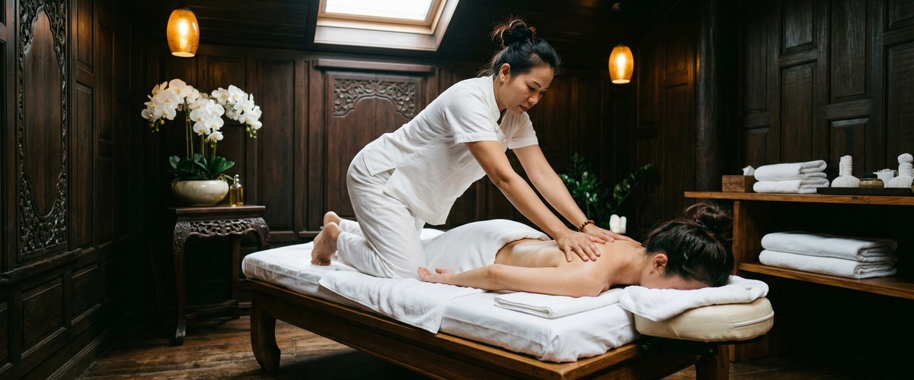
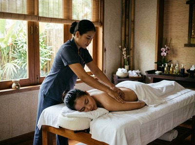

That familiar ache that sets in the day after a hard training session, a long run, or a workout you hadn't done in a while: sore muscles are something almost everyone has experienced.

The stiffness, tenderness, and reduced range of motion can make even walking downstairs feel like a challenge. If you want to refresh sore muscles and get back to feeling like yourself, massage therapy offers real, evidence-backed relief.
Delayed onset muscle soreness (DOMS) is the pain and stiffness that follows hard or unfamiliar exercise. It usually peaks between 24 and 72 hours after activity.

The cause is thought to be eccentric muscle contractions — the lengthening phase of movement — which create small tears in muscle fibres. This triggers local inflammation, tight movement, and that deep aching feeling that makes the day after leg day so grim.
DOMS can affect anyone: the seasoned athlete who pushes harder than usual, the office worker who takes up running for the first time, the gym-goer coming back after a break. It is not a sign of injury.
But left unmanaged, it slows recovery, reduces performance, and makes regular exercise feel harder than it should.
Massage works on sore muscles in several ways at once. It boosts local blood flow and lymphatic drainage, helping to clear waste products that build up after hard effort.
It also reduces tension and stiffness by applying steady pressure to soft tissue. This encourages the nervous system to ease its grip on overworked muscle fibres.
A systematic review published in Frontiers in Physiology found that massage cut soreness ratings at 24, 48, and 72 hours after hard exercise. It also helped restore muscle performance, confirming massage as an effective recovery strategy.
At Glasgow Thai Massage, the best treatments for sore muscles are Thai sports massage, which uses targeted pressure and assisted stretching to release deep tension, and Thai oil massage, which pairs therapeutic technique with warm oil to ease surface tightness and support circulation.
Traditional Thai massage — performed fully clothed using assisted stretching along the body's energy lines — is also highly effective. It restores range of motion when muscles have shortened and tightened from heavy effort. Book your session online to start your recovery sooner.
A session focused on sore muscle recovery begins with a short conversation. Maliwan or Jariya will ask where you're tight, what you've been doing, and how long the soreness has been there. This shapes which techniques they use.
For post-exercise soreness, the session typically combines compression and slow, steady pressure on the affected areas with assisted stretching to restore length to overworked tissue.
The studio is at Victoria Chambers on West Nile Street in Glasgow City Centre. It's easy to reach from most parts of the city, making it practical to book within the 24 to 72-hour window when massage has the greatest impact.
Most clients leave with better mobility and less soreness — often after a single session. Book online to find a time that works for you.
Anyone who exercises regularly can benefit. But the people who most often arrive at Glasgow Thai Massage with sore muscles include runners recovering from distance events, gym-goers who train hard without a recovery plan, cyclists whose legs have taken a beating on long rides, and beginners returning to exercise after a gap.
Office workers who add intense weekend activity on top of a sedentary week — often called "weekend warriors" — are especially prone to DOMS. Their bodies haven't had time to adapt to the sudden increase in load.
Regular sports massage as part of a training routine helps the body adapt, recover faster, and perform more consistently over time.
Ideally within 24 to 72 hours of exercise, while DOMS is at its peak. Research shows massage is most effective in this window. It helps reduce soreness and supports muscle recovery. That said, a session a few days later can still ease residual tightness and restore range of motion.
Some sensitivity is normal when working on muscles affected by DOMS. A skilled therapist will adjust pressure and technique to match your tolerance. They'll start lighter and build as the tissue responds. Any discomfort during treatment is usually brief and followed by a clear drop in soreness. Always let your therapist know if the pressure feels too much.
Both play a role. Rest lets the body complete its repair process. Massage actively supports that repair by improving circulation, reducing inflammation, and easing muscle tension. Evidence suggests massage reduces soreness faster than rest alone. The two approaches work best together.
Thai sports massage is a strong choice. It combines deep pressure, compression, and assisted stretching to target both surface and deeper muscle tightness. Thai oil massage works well if the soreness is widespread and you want a more flowing treatment that aids circulation across large muscle groups. Your therapist will help you choose based on where the soreness is and how intense it feels.
Regular massage as part of a training routine helps the body recover more efficiently between sessions. Over time, this can reduce how severe DOMS gets. It also improves flexibility and range of motion. That can lower the risk of the muscle damage that causes heavy post-exercise soreness. Think of it as maintenance, not just a one-off fix.
Light activity the day after a recovery massage is generally fine. Most clients find their mobility and comfort improve a lot after treatment. For intense training, it's wise to wait at least 24 hours after a deep sports massage. This gives the tissue time to fully respond before you load it again.